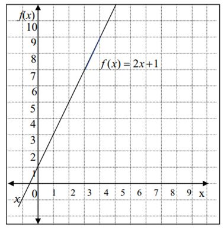

Persamaan Garis Lurus

Pengertian Persamaan Garis Lurus
Jika dilihat pada grafik, persamaan garis lurus memiliki perbandingan yang sama. Artinya antara selisih koordinat y dan selisih koordinat x bernilai serupa. Maka, persamaan garis lurus adalah perbandingan selisih koordinat y dan selisih koordinat x.
konsep persamaan garis lurus berkaitan dengan gradien atau kemiringan. Biasanya persamaan garis lurus digambarkan dalam bidang kartesius. Untuk memahami pengertian persamaan garis lurus, perhatikan grafik dalam koordinat cartesius berikut ini.
Pada grafik di atas diketahui fungsi f(x) = 2x + 1. Sumbu mendatar disebut sumbu x dan sumbu tegak disebut sumbu f(x). Jika fungsi di atas dituliskan dalam bentuk y = 2x + 1, maka sumbu tegak disebut sumbu y. Jadi, y = f(x)
Grafik fungsi f(x) = 2x + 1 atau y = 2x + 1 berupa garis lurus, maka bentuk y = 2x + 1 disebut persamaan garis lurus. Adapun sifat-sifat persamaan garis lurus adalah sebagai berikut
1. Garis Sejajar
2. Garis Berimpit
3. Garis Tegak Lurus
4. Garis Berpotongan
Rumus Persamaan Garis Lurus
Rumus persamaan garis lurus dinyatakan dalam dua bentuk yaitu bentuk eksplisit dan bentuk implisit, apa itu?
Bentuk Eksplisit adalah bentuk persamaan garis lurus dituliskan dengan y = mx + c dimana x dan y merupakan variabel sedangkan m dan c adalah konstanta. Dalam hal ini, m sering disebut koefisien arah atau gradien dari garis lurus. Sehingga untuk garis yang persamaannya y = 2x + 1 dengan gradien m = 2
Bentuk implisit dimana persamaan y = 2x + 1 dapat diubah ke bentuk lain yaitu 2 x - y + 1 = 0. Jadi, bentuk umum lain dari persamaan garis lurus dituliskan dengan Ax + By + C = 0
Sementara itu, untuk mencari persamaan garis lurus sendiri terdapat dua cara. Pertama jika gradiennya diketahui dan garis melalui satu titik, kedua jika diketahui dua titik yang dilalui garis. Berikut rumus persamaan garis lurus:
1. Diketahui gradien dan satu titik yang dilalui garis, maka y - y1 = m (x-x1)
2. Diketahui dua titik yang dilalui garis, maka: